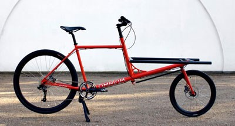
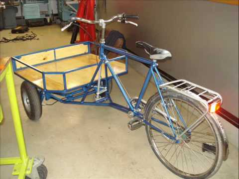
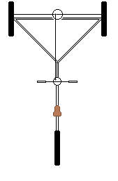

mitt nästa projekt blir att bygga en eldriven flakcykel. Det började när jag skojade med tanken om att bygga en sån här:
sen fick jag megabånge när jag såg denna, och stigson hypade upp mig:
eftersom jag inte vill att cyklen ska bli stulen så vil jag helst göra den av gamla delar och eventuellt göra egna grejer
jag har redan en gammal cykel som jag använde som elcykel innan jag bytta själva cykeln:
jag fick den av mormor så jag antar att jag får paja den
ett extra hjul har jag också, bakhjulet till min nuvarande elykel står och dammar i vardagsrummet, så det och det nuvarande bakhjulet på mormors gamla blir framhjulen på flakcyklen
metallrör kommer jag antagligen köpa 35mm stålrör från metallvaror.se
plankor köper jag från lokala jem o fix
metallstavar, plattor och skruvar vet jag inte än
jag har tänkt fram en plan som jag ska kolla med min no-lärare ifall det funkar:
tanken är att en metallstång sitter lite off-center vid styret (där hjulet vanligtvis sitter), och när man svänger höger dras stången fram och snurrar "hjulet" där fram medsols
som drar det vänstra hjulet och knuffar det högra hjulet så att båda pekar höger och man svänger höger, och motsatsen gäller om man svänger vänster
uppdaterar när jag orkar och efter att jag har frågat min no-lärare